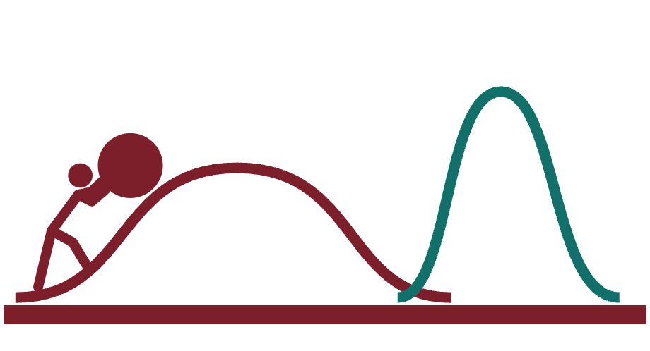
Being Bayesian
Stress-Testing India's Loudest Stories with Open Data and FOSS
Jaidev Deshpande · beingbayesian.in
IndiaFOSS 2026
Hi, I'm Jaidev. For the last two years I've written a newsletter called Being Bayesian, where I take apart popular, confidently-stated claims about the Indian economy and society using the country's own public microdata. Before any of that — I want to ask you something else first.
How my sabbatical started
This is, genuinely, how it started. Someone wrong on the internet, and then a slow descent into r/LinkedInLunatics. Two years later, here we are.
Quiz Time!
Scan this now, no name attached; we only care about the shape of the room. Answer with your gut. This isn't a new idea: Hans Rosling ran the same experiment for years, asking audiences basic multiple-choice questions about the state of the world, and people scored worse than chimps picking bananas at random. Our instincts are systematically, not randomly, wrong. Let's see if we do any better.
A loud opinion online, no data attached. It rests on one person's experience. How much of India does that cover?
Group Share of adults Share of the online crowd
Gender Men 49.8% 56.8% Women 50.2% 43.2% Age Under 30 34.2% 49.8% 30 and over 65.8% 50.2% Education Higher education 14.3% 23.4% Below higher 85.7% 76.6% Region Urban 31.1% 38.7% Rural 68.9% 61.3% Income Richest fifth 20% 26.7% Other four fifths 80% 73.3%
Shading compares the two groups within each pair, column by column · Share of adults: PLFS 2023–24, survey-weighted microdata (income fifths are 20% by definition) · Share of the online crowd: Bayes’ rule on PLFS shares and Data For India internet-use rates, 2023
An opinion with no data behind it is really a request: trust me. And what you're trusting is the person's own experience, which is a sample of one life. So the question isn't whether the opinion is right. It's how much of India that one life can speak for. This is the one time in the talk I'll do the actual Bayesian maths instead of borrowing the vocabulary. Two ingredients. The first column is the prior: how India's adults are actually spread across these groups, computed from the raw PLFS microdata and weighted by the survey multiplier. What every hot take quotes is a different number: men, the young, the educated, city-dwellers and the rich are all far more likely to be online. That's P(online given who you are). Bayes' rule combines the two into the right-hand column, P(who you are given you're online): who's actually in the online crowd. Under-30s are a third of India's adults but half the crowd. Graduates are one adult in seven, and nearly one in four of the crowd. Every group that's already advantaged offline is over-represented online, before any algorithm gets involved.
If they come with no evidence, the average influencer is speaking for no more than 1 in 12 Indians.
“What can be asserted without evidence can also be dismissed without evidence.”
Now take the typical influencer. The most generous definition I can give him is just two traits: a man, with a college degree, who's online. That's 8% of India's adults, about one in twelve. Define him by income instead of education, an online man in the richest fifth, and you get one in twelve again, from a completely different table. Add one more real trait, like his age, and it drops to one in nineteen or one in thirty-one, and that's even assuming every one of those men is online. I'm stopping at age on purpose. You can make anyone unrepresentative by piling on traits, so the headline is the kindest number, not the most dramatic one. His experience might be perfectly true for people like him. It just isn't evidence about the other eleven, and the further a claim is from people like him, rural women on welfare for instance, the less it's worth. An opinion with no data behind it shouldn't move you, however popular it looks. Dismissing it isn't the same as disproving it; it just means not updating.
Influencer 1 of 4
The one who's trying to sell you something
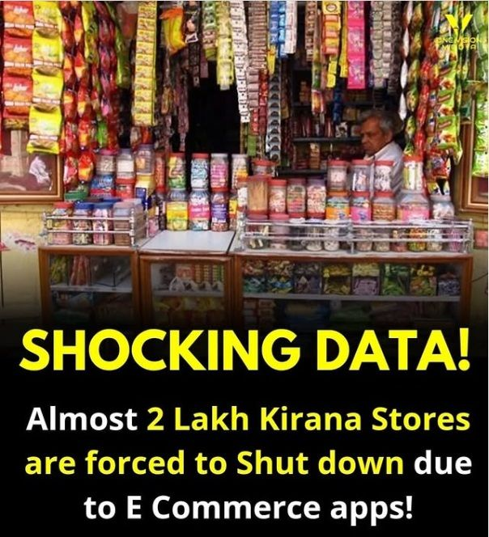
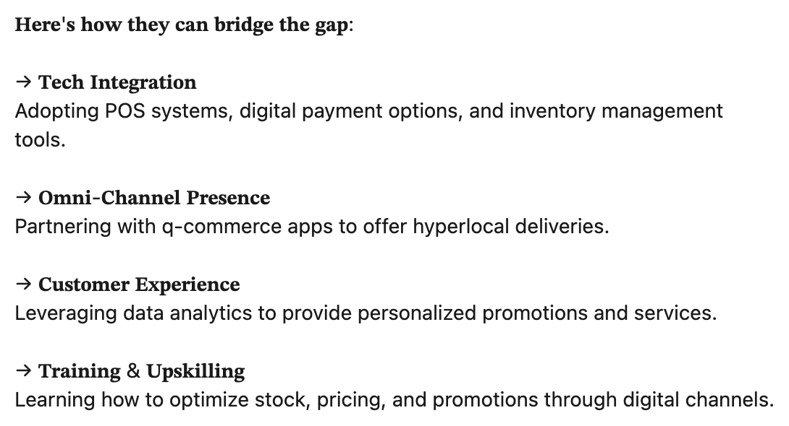
“Kirana stores are dying. Here's how they can bridge the gap.”
A product, pitched as a ubiquitous, transformative solution · Case 1: kirana stores
So who are these people with a one-in-twelve view of the country and a feed that tells them it's half? Four types, and you'll recognise every one. The seller has a product, and needs you to believe it's the answer to everything. First the panic, "shocking data, two lakh kirana stores shut down", then the pitch: here's how they can bridge the gap, tech integration, omni-channel presence, data analytics. The problem is always sized to fit the solution.
Influencer 2 of 4
The jingoist
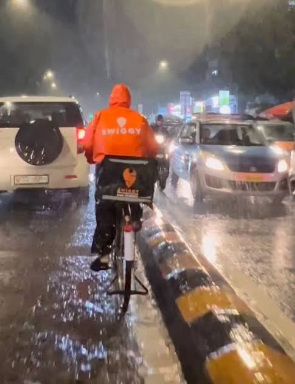
“Leave our founders alone. It's not exploitation, it's public service !”
Criticism of a business, recast as an attack on the nation · Case 2: gig work
The jingoist takes any criticism of a business and turns it into an attack on the country. Gig platforms aren't employers under scrutiny; they're nation-builders, and asking what the workers actually earn is ingratitude.
Influencer 3 of 4
The pointless contrarian
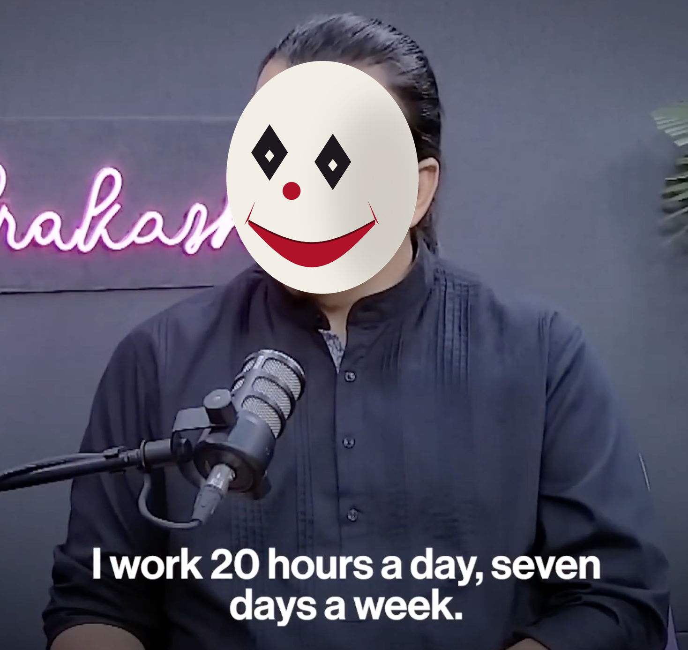
“Work-life balance is a western concept. I work 140 hours every week.”
Contrarian for its own sake · Case 3: the 90-hour week
The pointless contrarian says the opposite of what everyone else says, because that's what gets attention. Work-life balance is a western concept; I work 140 hours a week. It's not an argument, it's a flex, and it only works if nobody asks what those hours would cost anyone else.
Influencer 4 of 4
The bully
“I am heavily taxed. Income tax is the only kind of tax there is. It funds freebies, which makes people lazier. I get nothing.”
Punching down, at the people with the least · Case 4: welfare
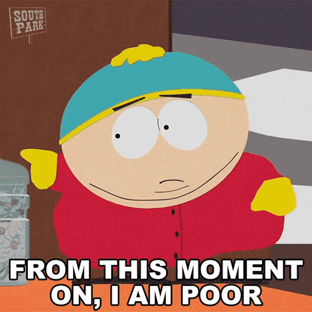
The bully punches down. He's heavily taxed, income tax is the only tax there is, it funds freebies, freebies make people lazier, and he gets nothing. It's always aimed at the people with the least, who are the least likely to be online to answer back. Four types, four claims, and in each case the person has a narrow view of the country and a reason to want it to be true. Let's see what the data says about each of them.
Case 1 · Retail
Quick commerce is killing kirana stores
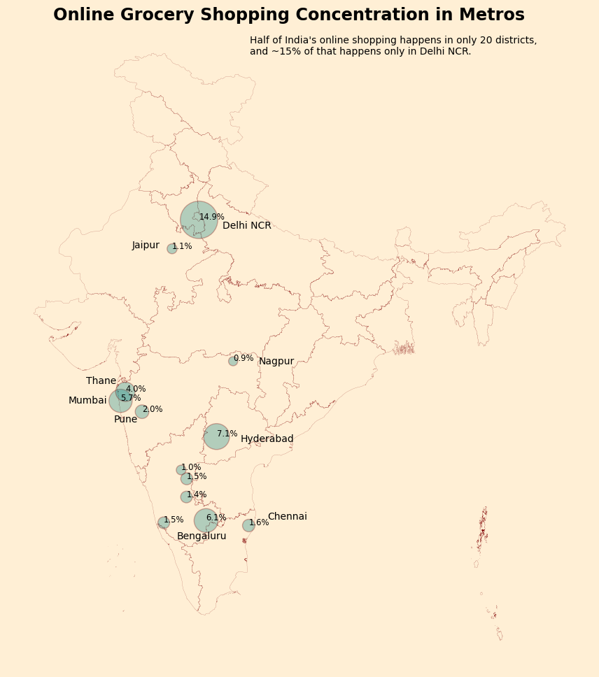
“About 2,00,000 kirana stores have shut down in the last year because of predatory e-commerce practices.”
AICPDF (traders' federation), widely reshared as breaking, shocking data
Gut check 200,000 sounds huge. Huge compared to what?
India has about 13 million kirana stores
200,000 closures against ~13M kirana stores 1.5% national closure rate… even limited to metro India alone 5% Households that shop online for groceries at all 7% — 93% stay offline… even inside urban India specifically 83% still don't shop onlineHistorical base rate: Amazon/Flipkart-era, COVID lockdown surge displaced only 1–2% , then ~0.5%
HCES 2023–24
This one came from a trade federation and went everywhere on social media with SHOCKING DATA energy. Before opening a dataset: 200,000 is a big number in isolation. But India doesn't have a small number of kirana stores. Let's find out how big. India has roughly thirteen million kirana stores. Two hundred thousand closures against that base is a 1.5% closure rate nationally, 5% if you only count metros. And only 7% of Indian households shop online for groceries at all — 93% never do. Even in urban India specifically, 83% of households don't shop online. This isn't new either: Amazon and Flipkart's big retail push only ever displaced 1 to 2% of local stores, and even the COVID lockdown e-commerce surge only got to about half a percent.
Case 2 · Labour
Gig work liberates India's poor and uneducated
“Workers who once faced barriers like lack of education or technical skills now earn ₹15,000 to ₹45,000 or even more.”
the platform-economy narrative, echoing NITI Aayog's own optimistic framing
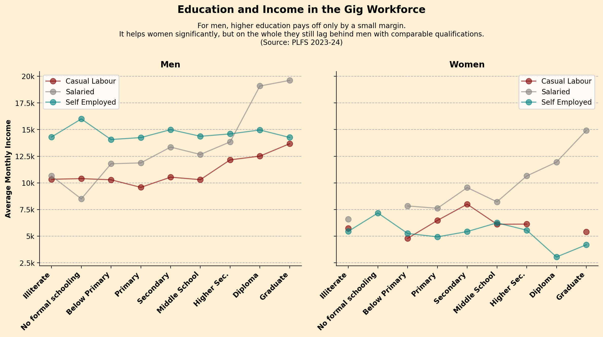
This is the LinkedIn-influencer-as-amateur-economist claim: platforms have liberated people once locked out by lack of education, and here are the numbers to prove it. Before we even reach for PLFS: does the phrase "gig worker" mean anything to India's official labour classification? This is the chart's own caption, straight from the notebook: for men, higher education pays off only by a small margin. It helps women significantly — a salaried woman with no schooling earns about 6,600 rupees a month; a salaried graduate woman earns about 14,900, more than double. But she's still earning about 24% less than a salaried male graduate, who's at about 19,600. The essay's "no meaningful income gain from education" line is true for men. It's the opposite of true for women, and that half of the finding just never got written down.
Case 3 · Work & Care
The 90-hr Workweek
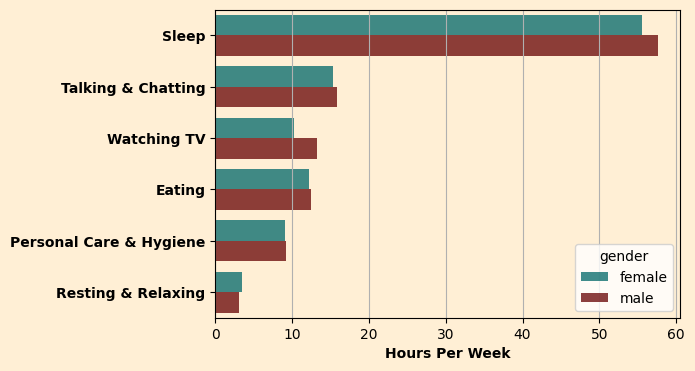
Best case: both genders cap chores at 1 hr/day women's ceiling rises to only ~67 hrs/wk To reach 90, you'd have to cut ~1 hr sleep/night, all TV (10–12 hrs/wk), most talk & text time (15 hrs/wk) Deficit still remaining after those cuts women 22 hrs · men 34 hrs
Three captains of industry, three escalating numbers, and the explicit dismissal of work-life balance as a foreign import. So: if a salaried, white-collar Indian actually worked 90 hours a week, what would have to give? Even in the most generous scenario — everyone caps chores at an hour a day — women's work-time ceiling only rises to 67 hours a week. Getting anyone to 90 means cutting an hour of sleep every single night, giving up television entirely, giving up most talking and texting with people you care about. And you're still 22 hours short for women, 34 for men.
Case 4 · Welfare
Welfare makes people lazy — and wasteful
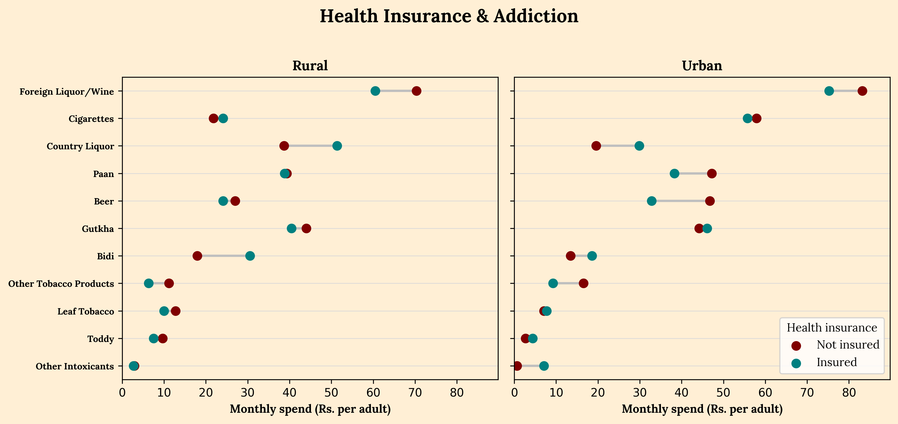
Urban PMJAY/scheme beneficiaries vs. non-beneficiaries spend ₹2/month more on gutkha Rural beneficiaries vs. non-beneficiaries spend ₹4/month less Entire spread across every group in the chart ±₹15
HCES, propensity-score matched on household size, caste, religion & region — not a raw comparison
Two of the Prime Minister's own economic advisors wrote this: government spending on health insurance is up, spending on intoxicants is up, therefore moral hazard — people take more risks because they feel insured. The hole is immediate: two things rising together doesn't mean one causes the other. Are we even looking at the same households? Instead of two national trend lines, I compared insured and uninsured households directly, split rural and urban. But not a naive comparison: households are first matched by propensity score on things like size, caste, religion and region, trimmed to common support, then compared within matched strata — the same rigor you'd want turned on any of the loud claims we started with. Urban beneficiaries spend about two rupees a month more on gutkha than urban non-beneficiaries. Rural beneficiaries actually spend four rupees less than rural non-beneficiaries. The entire chart, top to bottom, spans about fifteen rupees.
But welfare's real effects hide where headlines don't look
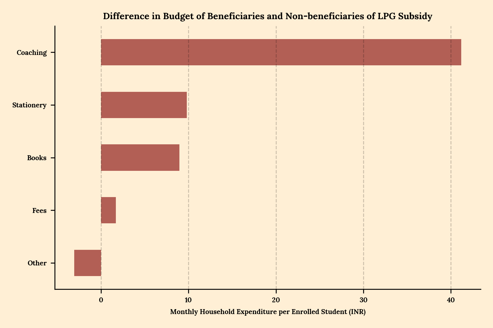
LPG-subsidy households spend nearly ₹60 more on education per student — and two-thirds of that goes straight into private coaching.
While the headline claim about vice spending falls apart, a genuine welfare effect was sitting one tab over, on a subsidy nobody was even arguing about. An LPG subsidy meant for cooking gas quietly turns into a child's tuition fee. That's the kind of finding no headline thinks to go looking for.
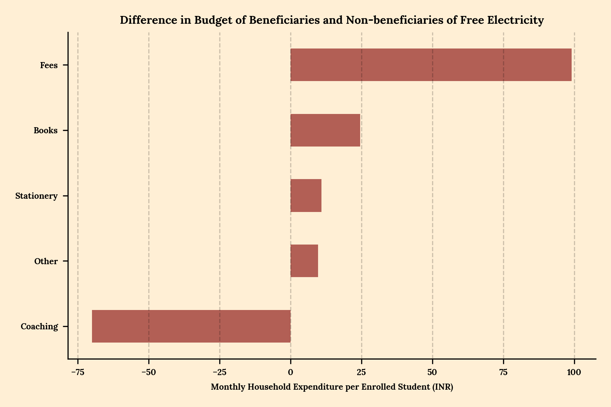
LPG Subsidy → Education +₹59 total — +₹41 to coaching (published) Health Insurance → Education −₹44 total, but +₹54 to coaching — hidden by fees falling −₹74 (never published) Free Electricity → Education +₹74 total, but −₹70 from coaching , +₹99 to fees — the opposite direction entirely
The published essay makes the LPG finding sound like the general shape of how welfare works — a subsidy frees up cash, some of it drifts into coaching. But I ran the identical propensity-score-matched comparison on all five schemes this essay analysed, and it isn't one shape. Health insurance shows an even bigger coaching shift than LPG — fifty-four rupees, more than LPG's forty-one — except the overall education total is negative, because formal school fees dropped even more. And free electricity does the opposite of everything else: fees go up by ninety-nine rupees, coaching goes down by seventy. The essay picked the cleanest one to tell. The other two are just as real, and they complicate the story instead of completing it. Small bonus that didn't fit anywhere: midday-meal households spend 145 rupees more on ready-to-eat food at home, even after subtracting the value of meals eaten at school — the single largest food-category effect in the entire five-scheme dataset, and nobody's written a sentence about it yet.
Elements of the Analysis
1 · The Data
2 · Survey Design & Interpretation
3 · The Maths & Stats
4 · LLMs
Four claims, one process. Now the unglamorous, reusable part: what it actually takes, under the hood, to run that process on Indian open data.
Element 1 · The data
Looking for Data, and Inspiration
HCES · PLFS · Time Use Survey
Where the data comes from, and who helps you use it. The raw microdata lives on MoSPI's portal, microdata.gov.in: HCES behind the kirana and welfare cases, PLFS behind gig work and the cold open, the Time Use Survey behind the 90-hour week. Underneath it, a community that makes it usable: DataMeet, Data For India, Diagram Chasing and BharatViz.
Element 2 · Survey Design & Interpretation
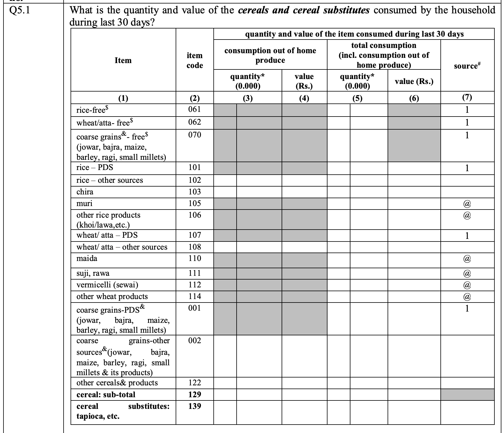
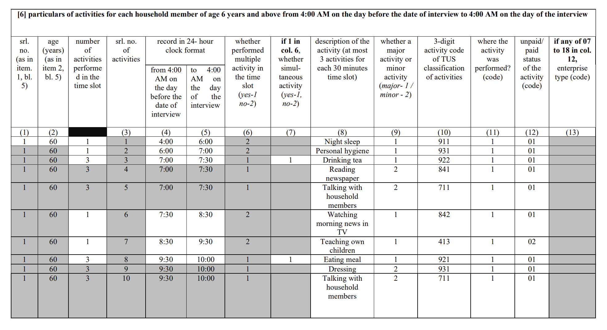
This is what the data actually looks like before it becomes a CSV: pages of a paper questionnaire. On the left, a household is asked about the quantity and value of every cereal it consumed in the last 30 days, item by item, each with a code, and split by where it came from: free, the ration shop, or elsewhere. Notice the row near the bottom: cereal sub-total, code 129. It sits in the same list, coded exactly like any other item. Forget to drop it and your cereal total silently doubles. And the 30 days is specific to this page; other pages ask about the last week or the last year. On the right, a time-use diary: for every household member aged six and over, every activity from 4 AM the day before to 4 AM on the day of the interview, in half-hour slots, up to three activities at once, each with an activity code. One person becomes dozens of rows. Every one of these design choices decides how you have to read the numbers.
Element 3 · The Maths & Stats
It all comes down to comparing aggregates of separate groups. Then look for statistical and numerical significance.
Weighted aggregate of a group
\[ \bar{y}_g = \frac{\sum_{i \in g} w_i \, y_i}{\sum_{i \in g} w_i} \]
\(w_i\) = the survey multiplier: how many households row \(i\) stands for
Ordinary least squares
\[ y_i = \beta_0 + \beta_1 T_i + \gamma^{\top} x_i + \varepsilon_i \]
\(\beta_1\) = the gap between the groups, holding everything in \(x_i\) fixed
Two-sided t-test
the gap
Non-beneficiaries
Beneficiaries
ȳC
ȳT
Is the gap between the means big, next to the spread within each group?
Strip away the jargon and every analysis in this talk is the same move: split households into groups, compute each group's weighted average, and compare. The weighted average is the formula on the left. Each row's value is multiplied by its survey multiplier, how many real households that one row stands in for, and divided by the total weight. Then two questions. Statistical significance: is the gap bigger than chance? The two-sided t-test on the right asks whether the beneficiaries' average is genuinely different from the non-beneficiaries', in either direction. And numerical significance: even if it's real, does it matter? Two rupees a month is statistically detectable and practically a rounding error. The one other tool that matters a lot is ordinary least squares. Regress the outcome on a group indicator plus the things you want to hold fixed, household size, caste, region, and the coefficient on the indicator is the gap between the groups after those are accounted for. Weight it by the multiplier too; with survey data that's weighted least squares. Every row in these surveys carries a weight, usually called "multiplier," sometimes shortened to "mult" — recording how many real households or people that one response stands in for nationally. This is the single most common way a well-meaning FOSS person gets NSS data wrong: load the file, call .mean() on a column, and get a number that looks plausible and is nowhere near the truth. This exact function lives in hces.py and gets imported by five different welfare notebooks; the workweek essay hand-rolls the identical line inline. Every number in this talk is a multiplier-weighted estimate, never a raw average.
Element 4 · LLMs
LLMs
Survey documentation runs to hundreds of pages
Almost everything is coded
Questionnaires are not linear
LLMs will
Pro-tip Write unit tests
Survey documentation runs to hundreds of pages. Almost everything is coded. Questionnaires are not linear. LLMs will hallucinate.
A Confession
“The amount of energy needed to refute bullshit is an order of magnitude bigger than that needed to produce it.”
— Alberto Brandolini, the Bullshit Asymmetry Principle
“One must imagine Sisyphus happy.”
— Albert Camus, The Myth of Sisyphus
Brandolini's law: the energy needed to refute bullshit is an order of magnitude bigger than the energy needed to produce it. Doing this is pushing a boulder up a hill that resets every day. One must imagine Sisyphus happy.
beingbayesian.in
beingbayesian.in: the newsletter, the essays, and the data and code behind every claim in this talk. Thank you.